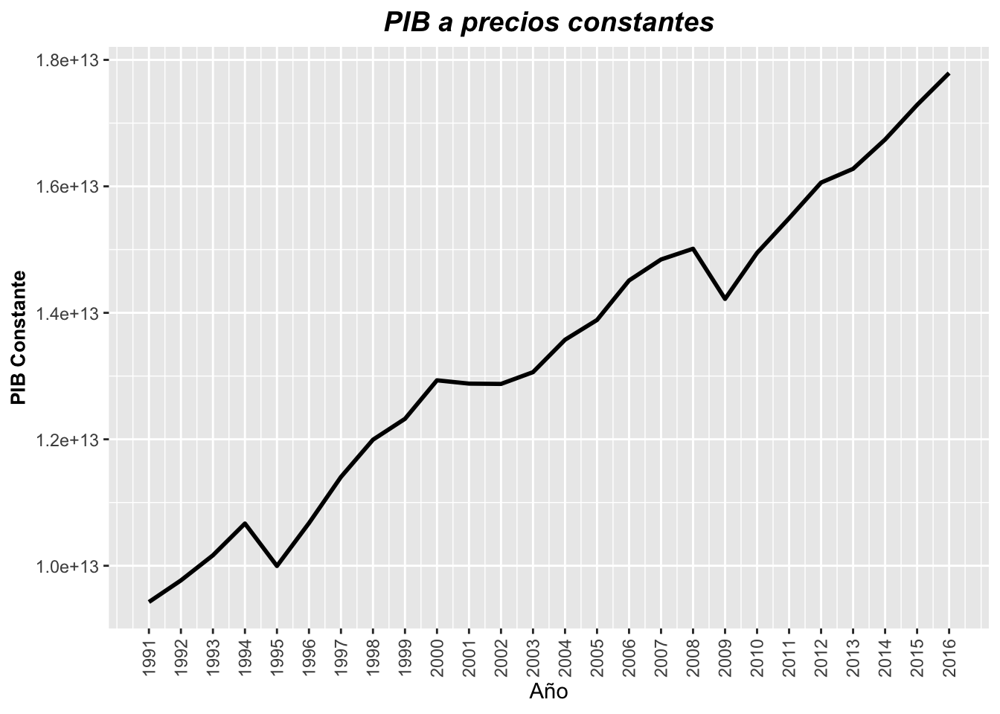
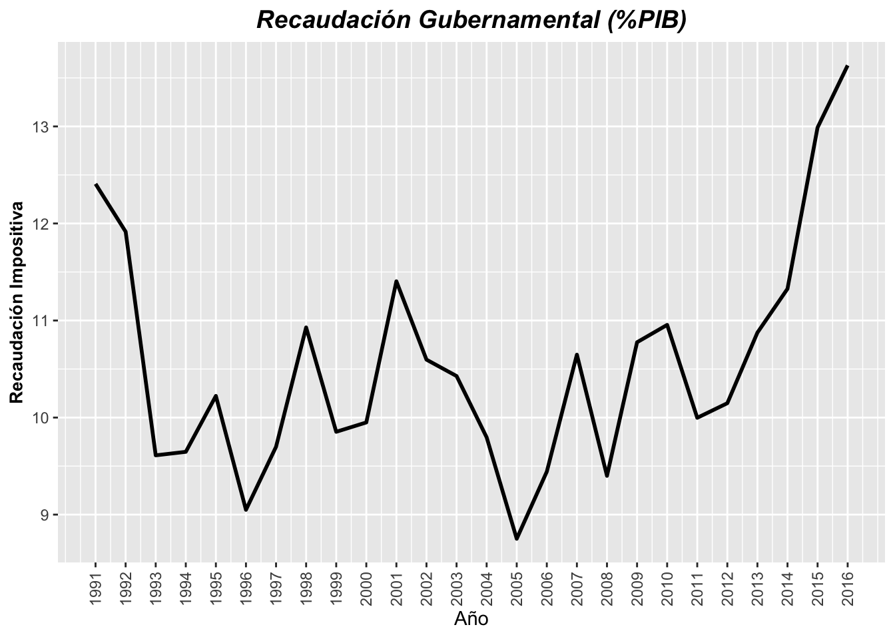
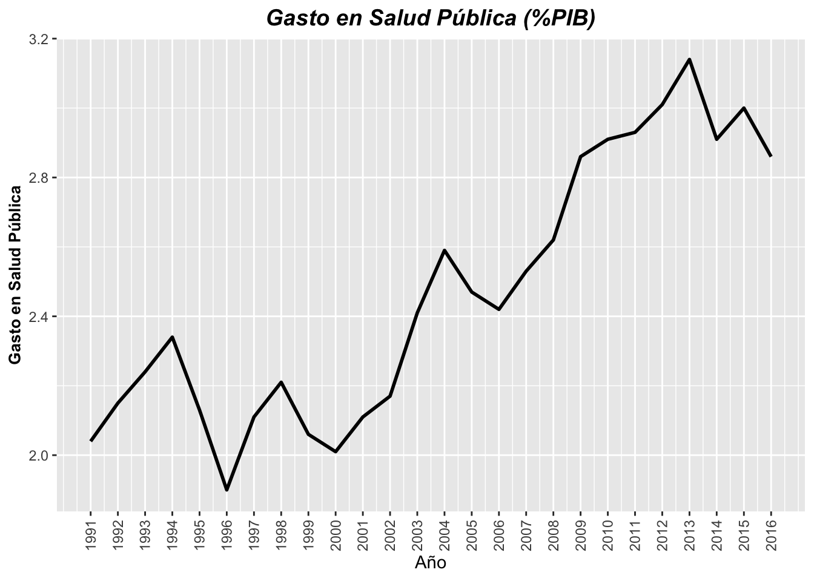
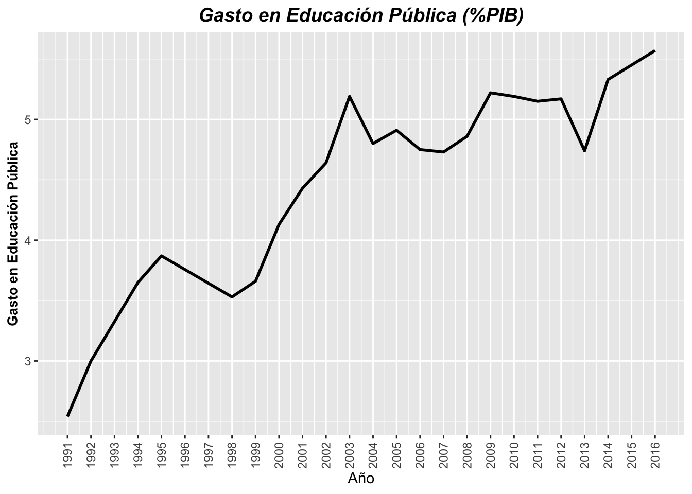
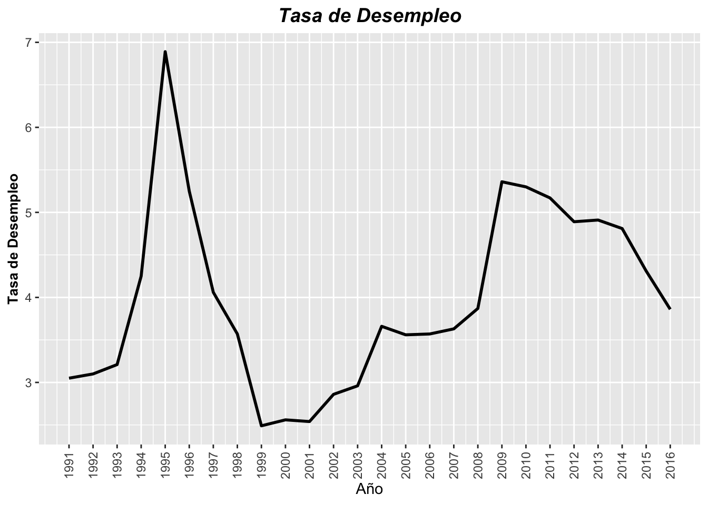

Chapter 2 Lectura de datos
Los datos se han obtenido a través e tres fuentes distintas, la API del banco mundial, la ley de ingresos de la federación y el presupuesto de egresos de la federación:
Las series obtenidas vía le banco mundial son:
| Code | Indicator Name |
|---|---|
| SP.POP.TOTL | Population, total |
| SL.UEM.TOTL.NE.ZS | Unemployment, total (% of total labor force) (national estimate) |
| NY.GDP.MKTP.CN | GDP (current LCU) |
Para más detalle acerca de la descripción y fuentes de estas series, se pueden consultar en el apartado de 14.
Las serie obtenida de la ley de ingresos de la federación corresponde al importe en pesos de la recaudación impositiva.
La series obtenidas a través del presupuesto de egresos de la federación son el gasto en salud pública y el gasto en educación pública. Tanto la recaudación impositiva, como el gasto en educación y salud pública serán representados como porcentaje del PIB a precios corrientes.
Extraemos de las series anteriormente mencionadas, todos los datos disponibles de manera anual para México a partir de 1991 hasta 2016. Esto es debido a que se trata del horizonte de tiempo con mayor cantidad de datos informados.
series_db <- read_excel("Datos/Series Tesis Recolección.xlsx", sheet = "Datos Finales")
series_db## # A tibble: 26 x 9
## country year Poblacion_Total Desempleo_Total GDP_corriente
## <chr> <dbl> <dbl> <dbl> <dbl>
## 1 Mexico 1991 87071512 3.05 949148000000
## 2 Mexico 1992 88828310 3.1 1125334000000
## 3 Mexico 1993 90600453 3.21 1560093286000
## 4 Mexico 1994 92349147 4.25 1781422460000
## 5 Mexico 1995 94045579 6.89 2311458453000
## 6 Mexico 1996 95687452 5.25 3123167939000
## 7 Mexico 1997 97281739 4.06 3962524166000
## 8 Mexico 1998 98821456 3.57 4810123454000
## 9 Mexico 1999 100300579 2.49 5738466369000
## 10 Mexico 2000 101719673 2.56 6693683014000
## # ... with 16 more rows, and 4 more variables: GDP_constante <dbl>,
## # Recaudacion_Impositiva_PorcGDP <dbl>, Gasto_Educacion_PorcGDP <dbl>,
## # Gasto_Salud_PorcGDP <dbl>Utilizaremos el logaritmo como función estabilizadora de varianza para el PIB a precios corrientes, aprecios constantes y para la población total.
series_db$log_GDP_corriente <- log(series_db$GDP_corriente)
series_db$log_GDP_constante <- log(series_db$GDP_constante)
series_db$log_Poblacion_Total <- log(series_db$Poblacion_Total)
series_db## # A tibble: 26 x 12
## country year Poblacion_Total Desempleo_Total GDP_corriente
## <chr> <dbl> <dbl> <dbl> <dbl>
## 1 Mexico 1991 87071512 3.05 949148000000
## 2 Mexico 1992 88828310 3.1 1125334000000
## 3 Mexico 1993 90600453 3.21 1560093286000
## 4 Mexico 1994 92349147 4.25 1781422460000
## 5 Mexico 1995 94045579 6.89 2311458453000
## 6 Mexico 1996 95687452 5.25 3123167939000
## 7 Mexico 1997 97281739 4.06 3962524166000
## 8 Mexico 1998 98821456 3.57 4810123454000
## 9 Mexico 1999 100300579 2.49 5738466369000
## 10 Mexico 2000 101719673 2.56 6693683014000
## # ... with 16 more rows, and 7 more variables: GDP_constante <dbl>,
## # Recaudacion_Impositiva_PorcGDP <dbl>, Gasto_Educacion_PorcGDP <dbl>,
## # Gasto_Salud_PorcGDP <dbl>, log_GDP_corriente <dbl>,
## # log_GDP_constante <dbl>, log_Poblacion_Total <dbl>2.1 Graficamos las series de datos
2.1.1 Producto Interno Bruto
Es muy importante antes de realizar cualquier análisis, primero realizar un análisis exploratorio, que en el caso de series de tiempo se reduce a realizar gráficas de las mismas:
gf1 <- grafica_serie(base_in = series_db,
eje_y = 'GDP_corriente',
titulo = 'PIB a precios corrientes',
titulo_y = 'PIB Corriente')
gf1_1 <- grafica_serie(base_in = series_db,
eje_y = 'GDP_constante',
titulo = 'PIB a precios constantes',
titulo_y = 'PIB Constante')
graf_latex(grafica1 = gf1,
grafica2 = gf1_1,
nombre = 'PIB_normal.pdf')
gf2 <- grafica_serie(base_in = series_db,
eje_y = 'log_GDP_corriente',
titulo = 'Logaritmo del PIB a precios corrientes',
titulo_y = 'log(PIB Corriente)')
gf2_2 <- grafica_serie(base_in = series_db,
eje_y = 'log_GDP_constante',
titulo = 'Logaritmo del PIB a precios constantes',
titulo_y = 'log(PIB Constante)')
graf_latex(grafica1 = gf2,
grafica2 = gf2_2,
nombre = 'log_PIB.pdf')gf1
gf1_1
2.1.2 Recaudación Fiscal
A continuación observamos la serie de la recaudación impositiva como porcentaje del producto interno bruto:
gf1 <- grafica_serie(base_in = series_db,
eje_y = 'Recaudacion_Impositiva_PorcGDP',
titulo = 'Recaudación Gubernamental (%PIB)',
titulo_y = 'Recaudación Impositiva')
graf_latex1(grafica1 = gf1,
nombre = 'Recaudacion.pdf')
gf1
2.1.3 Gasto en Salud Pública
gf1 <- grafica_serie(base_in = series_db,
eje_y = 'Gasto_Salud_PorcGDP',
titulo = 'Gasto en Salud Pública (%PIB)',
titulo_y = 'Gasto en Salud Pública')
graf_latex1(grafica1 = gf1,
nombre = 'Gasto_Salud.pdf')
gf1
2.1.4 Gasto en Educación Pública
gf1 <- grafica_serie(base_in = series_db,
eje_y = 'Gasto_Educacion_PorcGDP',
titulo = 'Gasto en Educación Pública (%PIB)',
titulo_y = 'Gasto en Educación Pública')
graf_latex1(grafica1 = gf1,
nombre = 'Gasto_Educacion.pdf')
gf1 ### Tasa de Desempleo
gf1 <- grafica_serie(base_in = series_db,
eje_y = 'Desempleo_Total',
titulo = 'Tasa de Desempleo',
titulo_y = 'Tasa de Desempleo')
graf_latex1(grafica1 = gf1,
nombre = 'Tasa_Desempleo.pdf')
gf1